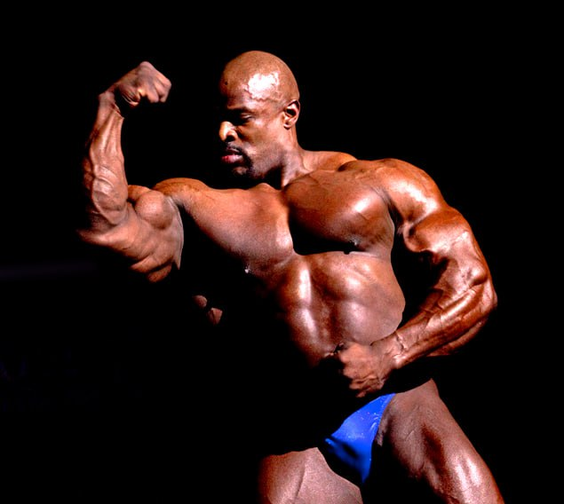

Ронні Коулмен (1964) – американський професійний бодібілдер, восьмиразовий переможець змагань «Містер Олімпія».
Народився Ронні 13 травня у місті Бастроп, штат Луїзіана. З дитинства в біографії Ронні Коулмена спорту відводилася важлива роль. Ронні грав у баскетбол, футбол, бейсбол, а в 12 років зайнявся пауерліфтингом. Коли ж надійшов у Державний університеті Грамблинга, почав вивчати економіку.
Але недовго пропрацювавши за фахом, вступив в поліцейську школу.
З того моменту наполегливі тренування в тренажерному залі стали нормою його життя. Не дивлячись на те, що значні форми спортсмену дісталися у спадок від батьків, лише наполегливі тренування дали змогу вдосконалити і ще більше наростити м’язову масу.
Перша перемога Коулмена відбулася в 1990 році, тоді на змаганні «Містер Техас» він став переможцем. Вже наступного року на чемпіонаті світу серед любителів зайняв перше місце в категорії важкої ваги. Перша перемога на конкурсі «Містер Олімпія» в біографії Ронні Коулмена відбулася в 1998 році. З тих пір він ще сім разів ставав переможцем, ставши другим культуристом, виграв «Олімпію» вісім разів з 1998 по 2005 (першим був Лі Хейні). У грудні 2007 року Коулмен одружився, виховує двох дочок.
Фільмографія
- Фільми у яких знімався Ронні Коулмен:
- 5th Ward (2018)
- Breaking Olympia: The Phil Heath Story (2024)
- Chris Cormier: I Am the Real Deal (2019)
- Ронні Коулмен: Король (2018)
- Functional Fitness (2016)
- Dare2Dream: The Flex Wheeler Story (2015)
- The Test of a Man (2013)
- Фільми про Ронні Коулмена(без його участі):
- The Untitled Action Bronson Show (2017)
Фото



Нагороди
| Рік | Нагорода |
|---|---|
| 1990 | Містер Техас |
| 1991 | Чемпіонат світу з бодібілдингу у важкій вазі |
| 1991 | Містер Всесвіт |
| 1995 | Професійний кубок Канади |
| 1998 | Ніч Чемпіонів |
| 1998 | Чемпіонат у Торонто |
| 1998 | Містер Олімпія |
| 1999 | Містер Олімпія |
| 1999 | Світові професійні чемпіонати |
| 2000 | Містер Олімпія |
| 2000 | Світові професійні чемпіонати |
| 2001 | Містер Олімпія |
| 2002 | Містер Олімпія |
| 2003 | Містер Олімпія |
| 2004 | Містер Олімпія |
| 2005 | Містер Олімпія |